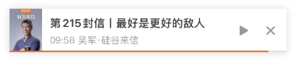
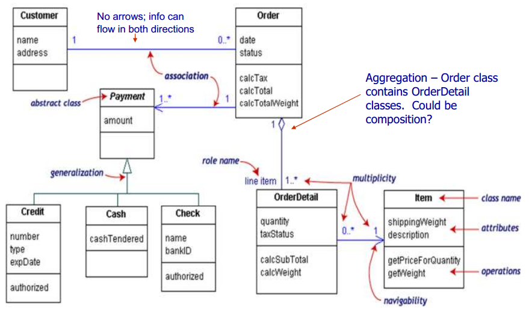
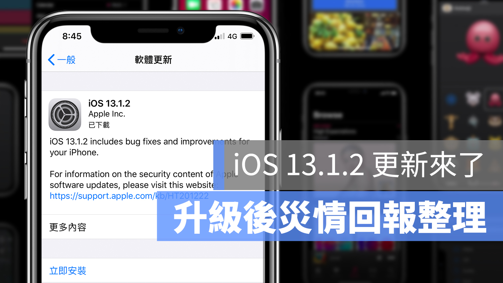

[ 啟發 ] Don’t Let Best be Enemy of Better | 最好是更好的敵人
近來讀了一篇很有心得的文章，特此下筆分享給大家，習得觀念是從訂閱<得到>app 有聲書而來的，它是吳軍老師 | 硅谷來信 | 第215封信
一開始看到這個主題，還不懂它的意思，直到文中提到，工作中很多時候我們無所作為不是因為不想做事，而是一根筋地追求最好(完美)，最後什麼也沒有得到。

更白話的說：
人們時常因為一昧追求美完，而忘記自已還是原地踏步，道理很容易懂，不過也常一鼓腦兒想朝向盡善盡美境界，因為價值 = 經驗 x 時間 更是讓人有滿滿的感觸
雖然我們說要實現最後10%，但這並不意謂我們不可以接受部份的改進。很多時候，一個完美結果需要很多次的改進才能實現，而不是一步就位。
一步到位，追求完美的觀念。或許是來自工業時代的觀念，因為製造出來的產品不能有任何的瑕疪，這會影響整體的量產，最終管理學也造就了6 Sigma(σ)，來提升品質
保時捷 911的例子
著名保時捷911的開發者小保時捷，是承習父親的喜愛汽車基因，而他不滿現況福斯金龜車(Volkswagen Beetle)馬力不足。也因此下定決心打造一台完美的汽車。他所創立的汽車公司最初所生產的跑車，亦是從福斯金龜車發展而來，但保時捷911更具備他所期望 → 馬力。最後他為了追求完美，成功打造一台保時捷911風靡全球，這個是工業時代的典範。
你看現今911跑車是不是還保有金龜車的神韻
軟工思維 v.s 產品疊代
一位在Google老員工小黃，曾待過全球衛星製造商SUSS MicroTec，IBM以及Yahoo，他身上流著純軟體工程的血液，事事都要做好規劃且開發時，必須嚴格導循軟體規範。這樣的工作思維讓他很不習新東家Yahoo環境，他看到Yahoo工程師時間一到軟體就匆忙上線，身為主管的他，跟他的下屬說明開發是要按照規範做事，但工程師回應說：「我們產品的疊代週期根本趕不上競爭對手阿」

軟體工程學中的UML 關系圖
漸進式節奏是合理的
我們來分析一下，在資訊時代下的產物(軟體)，其實它的召回成本不算太高，因此在工業時代的擔心其實是沒有必要的。後來小黃他到了Google也漸漸這樣的節奏，意思是說
他已經習慣每一次工作做更好，而不是最到最好。
在資訊時代，最有效的工作方式就是保證每一次要比先前更好，且能做到持續不斷的進步，而不是為了追求最好把工作的週期無限拖長
iOS更新災情
最近iphone iOS 13自動更新，引起很多用戶反應發生系統問題，我家人也是深受其害。但讀完上面的例子，你現在可以理解在資訊時代，軟體的開發節奏似乎大於一切，突然懂了什麼…原來這就是資訊時代的節奏阿

由蘋果人blog整理災情資訊: https://applealmond.com/posts/59808
“目標” 與 “行動” 是不一樣的
同樣的，Google有個基礎服務，這個服務每星期要更新一次，每一次更新雖然會事先規劃好需要更新的全部的功能，但到了升級前，總有別的項目不能如期交付，以至于它的不完美。
那怎麼辨呢？是否再等一兩天？
Google的做法是不能等，因為永遠沒有完美的時候！
將一個比原來更好的一點的版本按時提供給user，總比為了追求一個完美的版本，最後什麼都提供不了好得多。
用數學打個比方
假如一個更好的改進可以讓我們獲得20%的收益，2次這樣的改進就能獲得40%，而我們自以為的完美最好的改進，不過是30%。
2 + 2 > 3 的道理誰都懂，做事情不怕慢，就怕停
因為我們隨著時間的推進，我們發現
過去所認為的完美，其實並不完美了
參考：
- 經濟日報 https://money.udn.com/money/story/6709/3784258
- Who first said it? (Don’t Let the Perfect Be the Enemy of the Good)